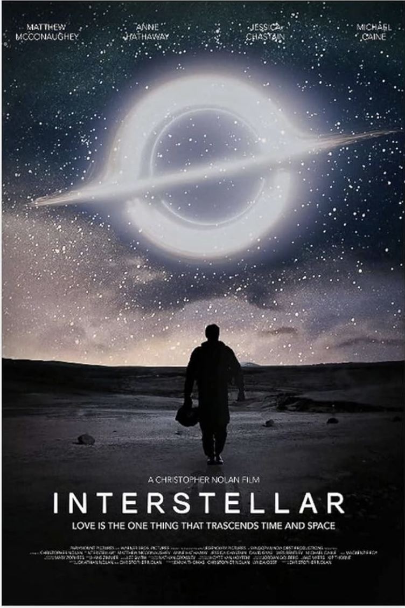
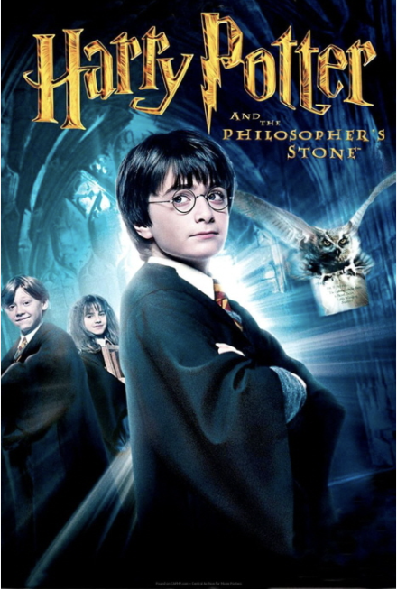
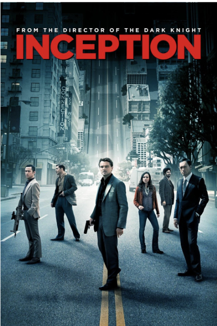
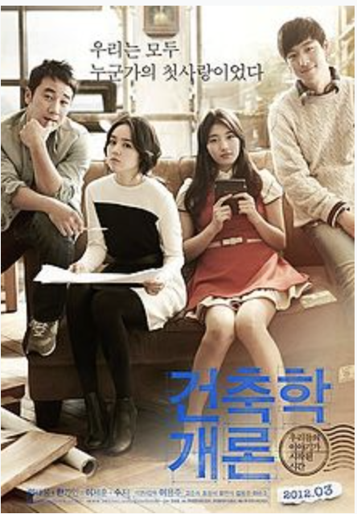

| 순위 | 제목 | 포스터 | 줄거리 | 바로가기 |
|---|---|---|---|---|
| 1 | 인터스텔라 |  |
서기 2067년, 인류는 악화되는 기상환경과 병충해로 만성적인 식량부족 사태를 겪고 있다. 재배가 가능한 식물이 하루하루 줄어가고 있으며, 대형 황사 때문에 사방이 흙먼지투성이다. 국가의 기능이 약화되어 교육 시설은 제 기능을 못 하고 각종 정부 기관과 군대마저 사라졌으며, 인류가 이룩한 과학 기술도 잊혀지는 중이다. 식량 부족으로 대부분의 사람들은 농업에 종사하며, 대학에 진학하는 극소수를 제외한 모든 아이들에게 농업이 권장되고 있다. 전직 조종사 겸 엔지니어이자 현직 농부인 미국인 주인공 '조셉 쿠퍼'(매튜 매커너히)는 아내를 잃고 장인 도널드와 함께 아들 톰과 딸 머피를 키우며 살고 있다. 아침 식사를 하던 중 머피는 2층에 있는 자기 방 안의 책들이 알 수 없는 이유로 떨어진다며 유령이 있는 것 같다고 말하지만, 쿠퍼는 유령은 없다며 과학적인 방법으로 접근할 것을 권유하는데... |
클릭 |
| 2 | 해리포터 |  |
1981년 11월 1일, 프리빗가 4번지 주민이자 평범한 것을 극히 중요하게 여기는 버넌 더즐리는 아내 피튜니아 더즐리와 어린 아들 더들리 더즐리의 배웅을 받으며 여느 때처럼 직장인 그러닝스로 출근하는데, 그의 주변에는 망토를 두른 사람들이 돌아다니거나 포터 부부와 그들의 아들 해리에 대한 대화가 오간다거나 부엉이들이 그의 집 주위에서 날아다니는 등 이상한 일들이 일어난다. 버넌은 이상함을 느끼지만 별로 개의치 않는다. 그날 저녁, 버넌은 피튜니아에게 포터 부부에 대해서 질문하지만 피튜니아는 이유도 없이 화를 낸다. 그날 밤, 프리빗가에서는 호그와트 교장 알버스 덤블도어 교수와 교감 미네르바 맥고나걸 교수가 어젯밤에 어둠의 마법사 볼드모트에게서 살아남고, 오히려 그를 죽게 만든 해리 포터에 대해 이야기하고, 루비우스 해그리드는 오토바이를 타고 아기인 해리 포터를 데리고 프리빗가로 온다. 부모를 잃은 해리 포터가 유일하게 남은 친족인 이모 피튜니아의 집에서 자라야 했기 때문인데... |
클릭 |
| 3 | 인셉션 |  |
주인공 코브는 패시브(PASIV DEVICE)라는 기계를 이용해 다른 사람과 꿈을 공유하고 그 꿈 속에서 타인의 비밀을 추출(Extraction)해내는 추출가라는 직업을 가지고 있다. 해변에서 발견된 코브를 일본인 경비원들이 발견해 일본풍 고성으로 데려가며 영화가 시작된다. 그리고 코브는 한 일본인 노인과 대면하게 되고, 노인은 코브의 소지품 중 팽이를 만져보면서 "이 팽이, 본 적 있어. 반쯤 잊혀진 꿈(Half Remembered Dream)에서."라고 말한다. 장면이 바뀌고, 코브는 동료인 아서, 내쉬와 함께 사이토라는 일본 기업가에게 추출 작업을 벌이는 중이다. 하지만 꿈 속에서 코브의 아내인 맬이 나타나 작업을 방해하는 바람에 사이토에게 잡혀 추출에 실패하고 모두 잠에서 깬다. 어떻게든 사이토가 갖고 있는 비밀을 알아내기 위해 코브 일행은 사이토를 바닥에 쓰러트려 총으로 위협하는데, 바닥에 쓰러진 사이토가 "이 카펫, 항상 바꾸고 싶었지. 그런데 그건 양모였는데, 이건 폴리에스테르야."하고 알아챔으로써 사실 코브 일행이 꿈속의 꿈(Dream within a Dream)을 사용했음이 드러나게 되는데... |
클릭 |
| 4 | 건축학개론 |  |
어쩌면… 사랑할 수 있을까? 건축학개론 수업에서 그녀를 처음 만났다 생기 넘치지만 숫기 없던 20살, 건축학과 승민은 '건축학개론' 수업에서 처음 만난 음대생 서연에게 반한다. 함께 숙제를 하게 되면서 차츰 마음을 열고 친해지지만, 자신의 마음을 표현하는 데 서툰 순진한 승민은 입 밖에 낼 수 없었던 고백을 마음 속에 품은 채 작은 오해로 인해 서연과 멀어지게 된다. 어쩌면 다시… 사랑할 수 있을까? 15년 만에 그녀를 다시 만났다 35살의 건축가가 된 승민 앞에 15년 만에 불쑥 나타난 서연. 당황스러움을 감추지 못하는 승민에게 서연은 자신을 위한 집을 설계해 달라고 한다. 자신의 이름을 건 첫 작품으로 서연의 집을 짓게 된 승민, 함께 집을 완성해 가는 동안 어쩌면 사랑이었을지 모를 그때의 기억이 되살아나 두 사람 사이에 새로운 감정이 쌓이기 시작하는데… |
클릭 |
| 5 | 테넷 |
우크라이나의 국립 오페라 하우스. 오케스트라가 연주 조율을 마치려는 찰나 총성과 함께 지휘자가 쓰러지며 수십 명의 무장테러집단이 들이닥친다. 공연장 2층 VIP석의 한 남성은 함께 관람하던 군 장성이 총을 꺼내는 것을 보고 위협을 느낀다. 오페라 하우스 밖에 주차된 밴 차량의 시점. 운전석의 러시아 남성이 '미국 놈들을 깨워라'라는 명령을 내리자, 뒷좌석에서 탄피를 튕기는 주도자(Protagonist)(존 데이비드 워싱턴)가 비춰진다. 이때 우크라이나 대테러부대 코르드(КОРД)가 도착하고, 주도자 일행은 부대마크를 확인한 뒤 부직포 부대마크 복제품들 중에 코르드 마크를 팔에 붙여 기동대원처럼 위장해 같이 진입하는데.. |
클릭 |